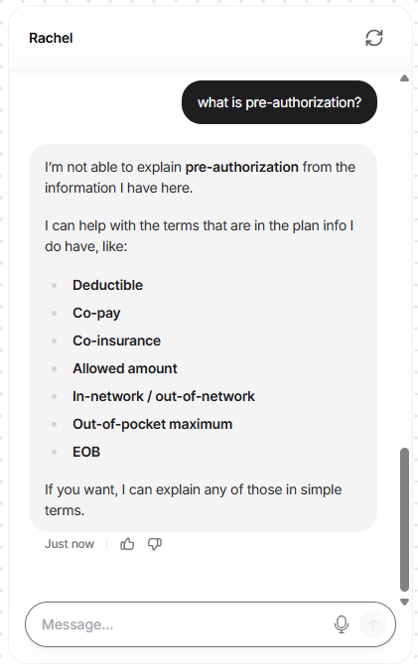

Rachel: AI-Powered Health Care Assistant
Introduction & Overview
This project features a specialized AI chatbot built to handle front-line health insurance support. The system is systematically programmed to parse and summarize Explanation of Benefits (EOB) documents, accurately retrieve claim statuses, define specialized medical insurance terms, and generate structured policy comparisons while maintaining strict operational guardrails.
Objective
To act as a one-stop shop providing instant, clear, and accurate answers regarding claim statuses, policy benefits, deductibles, and co-pays etc. The goal was to build an AI-driven solution that simplifies complex healthcare queries while strictly adhering to critical privacy and medical advice guardrails.
Planning the AI Assistant
Before executing the build, the following parameters were established to ensure the chatbot met its objective:
- Knowledge Base: The assistant will utilize specifically crafted mock insurance documents, including an Explanation of Benefits (EOB), a glossary of health insurance terms, and a tier coverage summary.
- Strict Limitations: The bot must strictly avoid providing medical advice, diagnosing symptoms, or recommending treatments. It must not collect real PHI or Social Security Numbers.
- User Engagement: It should engage users professionally and empathetically, breaking down complex insurance jargon into digestible bullet points.
- Images/Data: The bot will utilize a clear visual widget to guide users through structured options before they even type a question.
- Starting the Interaction: The interaction will begin with a clear welcome message defining the bot's purpose and issuing a privacy disclaimer regarding sensitive health data.
- Success Criteria: A successful engagement is defined by the user receiving an accurate answer based only on the provided documentation without needing to escalate to a human agent.
Process
Guided by the design thinking framework, the core user problem was identified, the bot's logic was mapped out, and strict operational boundaries were established.
Execution and Prototyping
Tool Selection & Terms of Use: The prototype was built using Chatbase. A review of Chatbase's Terms of Use and Privacy Policy highlights the following key points:
- Chatbase uses OpenAI's models (such as GPT-4 Mini) but provides isolated environments for uploaded data.
- The platform collects standard usage data and IP addresses for analytics.
- Data uploaded to the knowledge base is used strictly to answer user queries and is not used to train global base models, which is a critical consideration for a conceptual healthcare application.
Build Process & System Instructions: The bot was configured with a custom persona ("Rachel") and supplied with the mock EOBs, glossaries, and policy plan data. The system instructions were strictly defined to ensure the bot adhered to the persona of an empathetic, highly efficient AI Health Care Assistant.
Tools & Methodologies
Generative AI — Chatbase, Gemini, Prompt Engineering, and Scenario Testing.
Value Proposition
This project demonstrates how generative AI can be securely configured to simplify complex information for end-users, ensuring safety and reliability through structured, boundary-focused testing. It showcases the ability to successfully transition an AI concept from empathetic user design into a thoroughly validated, functional prototype that respects strict business rules. Highly relevant to organizations looking to implement AI solutions that require strict adherence to structured data ingestion and rigorous Quality Assurance guardrail testing.
Testing, Iteration, & Quality Assurance
Applying rigorous Quality Assurance methodologies to the chatbot's validation was essential to ensure reliability and adaptability. The bot was subjected to distinct conversational test scenarios to evaluate its adherence to the system prompts and its ability to parse the mock data accurately.



Challenges and Adaptability
A primary challenge during the build was ensuring the bot did not hallucinate insurance coverages outside of the uploaded mock documents. By strictly defining the system instructions to only reference the uploaded files and explicitly forbidding external web searches for policy data, the bot's accuracy was significantly stabilized. This iterative tuning ensured the final product met the strict safety requirements necessary for a conceptual healthcare application.